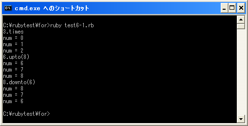

timesメソッド、uptoメソッド、downtoメソッド
「times」メソッド、「upto」メソッド、「downto」メソッドはIntegerクラスで用意されているメソッドです。IntegerクラスのサブクラスであるFixnumクラスなどのオブジェクトに対してこれらのメソッドを実行することで、指定した回数だけ繰り返し処理を行うことが出来ます。
※あわせて「stepメソッド」も参照して下さい。
では順に見ていきます。
timesメソッド
「times」メソッドは次のように使用します。
オブジェクト.times{|変数|
実行する処理1
実行する処理2
}
又は次のように記述することも出来ます。
オブジェクト.times do |変数| 実行する処理1 実行する処理2 end
「times」メソッドは、変数に「0」から「対象のオブジェクトが持つ数値 - 1」を順に代入しながら「{」から「}」までの処理(又は「do」から「end」までの処理)を実行します。1回繰り返す毎に1ずつ数値は増加します。(「|変数|」の部分は省略可能です)。
具体的には次のように使用します。
10.times{
print("Hello¥n")
}
上記の場合は10回「{」から「}」までの処理を繰り返します。
uptoメソッド
「upto」メソッドは次のように使用します。
オブジェクト.upto(max){|変数|
実行する処理1
実行する処理2
}
又は次のように記述することも出来ます。
オブジェクト.upto(max) do |変数| 実行する処理1 実行する処理2 end
「upto」メソッドは、変数に「対象のオブジェクトが持つ数値」から「max」を順に代入しながら「{」から「}」までの処理(又は「do」から「end」までの処理)を実行します。1回繰り返す毎に1ずつ数値は増加します。(「|変数|」の部分は省略可能です)。
具体的には次のように使用します。
3.upto(7){|num|
print("num = ", num, "¥n")
}
上記の場合は変数「num」に数値「3」から「7」まで順に代入しながら「{」から「}」までの処理を繰り返します。
downtoメソッド
「downto」メソッドは次のように使用します。
オブジェクト.downto(min){|変数|
実行する処理1
実行する処理2
}
又は次のように記述することも出来ます。
オブジェクト.downto(min) do |変数| 実行する処理1 実行する処理2 end
「downto」メソッドは、変数に「対象のオブジェクトが持つ数値」から「min」を順に代入しながら「{」から「}」までの処理(又は「do」から「end」までの処理)を実行します。1回繰り返す毎に1ずつ数値は減少します。(「|変数|」の部分は省略可能です)。
具体的には次のように使用します。
7.downto(3){|num|
print("num = ", num, "¥n")
}
上記の場合は変数「num」に数値「7」から「3」まで順に代入しながら「{」から「}」までの処理を繰り返します。
サンプルプログラム
では簡単なプログラムで確認して見ます。
#! ruby -Ku
print("3.times¥n")
3.times{|num|
print("num = ", num, "¥n")
}
print("6.upto(8)¥n")
6.upto(8){|num|
print("num = ", num, "¥n")
}
print("8.downto(6)¥n")
8.downto(6) do |num|
print("num = ", num, "¥n")
end
上記のプログラムを「test6-1.rb」として保存します。文字コードはUTF-8です。そして下記のように実行して下さい。

( Written by Tatsuo Ikura )

著者 / TATSUO IKURA
初心者～中級者の方を対象としたプログラミング方法や開発環境の構築の解説を行うサイトの運営を行っています。